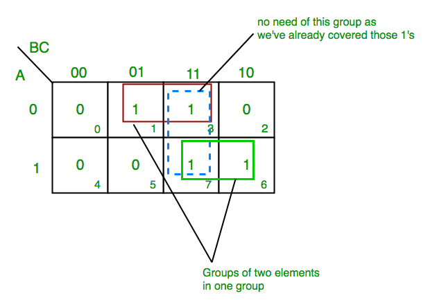
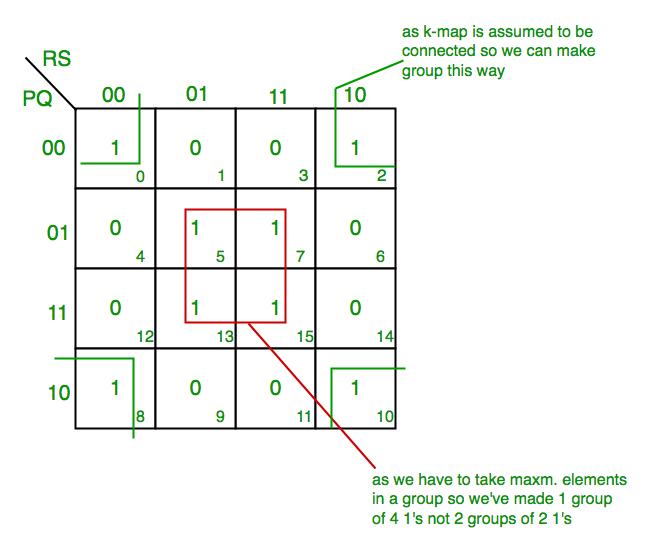
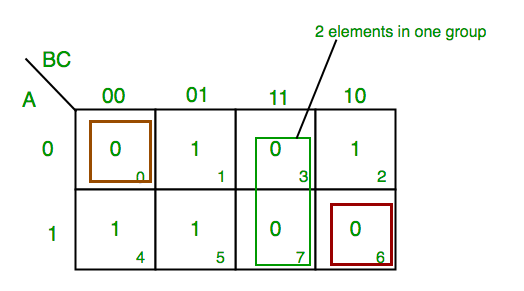

In many digital circuits and practical problems we need to find expression with minimum variables. We can minimize Boolean expressions of 3, 4 variables very easily using K-map without using any Boolean algebra theorems. K-map can take two forms Sum of Product (SOP) and Product of Sum (POS) according to the need of problem. K-map is table like representation but it gives more information than TRUTH TABLE. We fill grid of K-map with 0’s and 1’s then solve it by making groups.
{kind=link}
Steps to solve expression using K-map-
- Select K-map according to the number of variables.
- Identify minterms or maxterms as given in problem.
- For SOP put 1’s in blocks of K-map respective to the minterms (0’s elsewhere).
- For POS put 0’s in blocks of K-map respective to the maxterms(1’s elsewhere).
- Make rectangular groups containing total terms in power of two like 2,4,8 ..(except 1) and try to cover as many elements as you can in one group.
- From the groups made in step 5 find the product terms and sum them up for SOP form.
SOP FORM
- K-map of 3 variables-
Z= ∑A,B,C(1,3,6,7)

From red group we get product term—
A’C
From green group we get product term—
AB
Summing these product terms we get- Final expression (A’C+AB)
- K-map for 4 variables
F(P,Q,R,S)=∑(0,2,5,7,8,10,13,15)

{kind=link}
From red group we get product term—
QS
From green group we get product term—
Q’S’
Summing these product terms we get- Final expression (QS+Q’S’)
POS FORM
- K-map of 3 variables-
F(A,B,C)=π(0,3,6,7)
{kind=link}
From red group we find terms
A B C’
Taking complement of these two
A’ B’ C
Now sum up them
(A’ + B’ + C)
From green group we find terms
B C
Taking complement of these two terms
B’ C’
Now sum up them
(B’+C’)
From brown group we find terms
A’ B’ C’
Taking complement of these two
A B C
Now sum up them
(A + B + C)
We will take product of these three terms :Final expression (A’ + B’ + C) (B’ + C’) (A + B + C)
2. K-map of 4 variables-
F(A,B,C,D)=π(3,5,7,8,10,11,12,13)
{kind=link}
From green group we find terms
C’ D B
Taking their complement and summing them
(C+D’+B’)
From red group we find terms
C D A’
Taking their complement and summing them
(C’+D’+A)
From blue group we find terms
A C’ D’
Taking their complement and summing them
(A’+C+D)
From brown group we find terms
A B’ C
Taking their complement and summing them
(A’+B+C’)
Finally we express these as product –(C+D’+B’).(C’+D’+A).(A’+C+D).(A’+B+C’)
PITFALL– *Always remember POS ≠ (SOP)’
*The correct form is (POS of F)=(SOP of F’)’